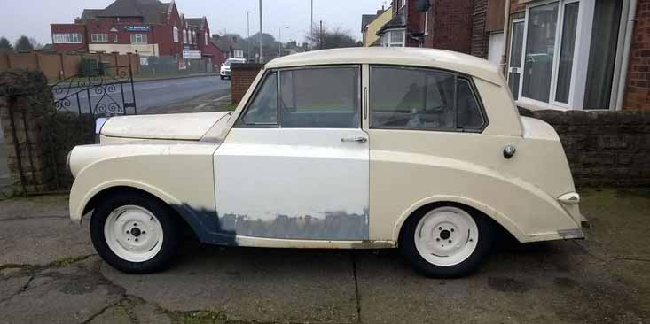
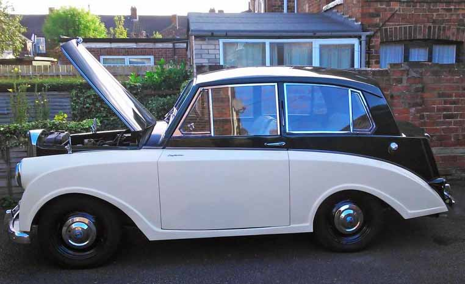
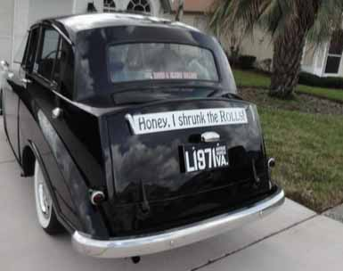
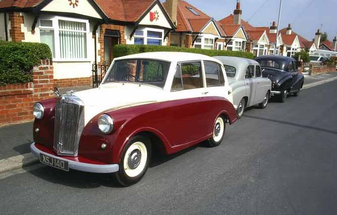
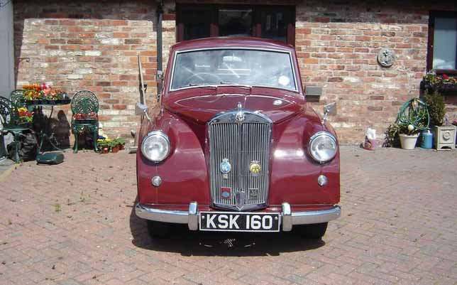
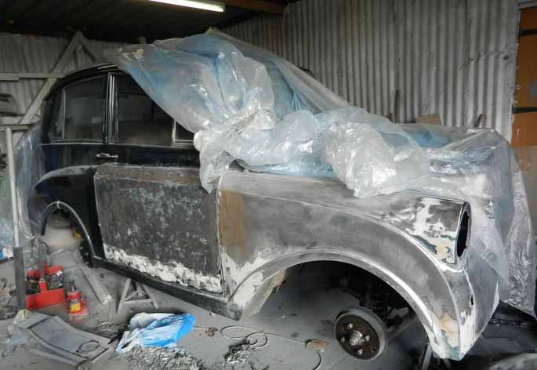

<link href="{{ site.baseurl }}/events/article.css" rel="stylesheet" type="text/css">
<main>
    <article>
        <ol id="breadcrumb">
            <li>
                <a href="{{ site.baseurl }}/">Home</a>
            </li>
            <li>
                <a href="{{ site.baseurl }}/events">Events</a>
            </li>
            <li>
                <a href="{{ site.baseurl }}/events/local">Local</a>
            </li>
            <li>Drive Your Triumph Day 2018</li>
        </ol>
        <div id="content">
            <h1>Drive Your Triumph Day</h1>
            <h2>10<sup>th</sup> February 2018</h2>
            <h3>Report by Paul Burgess</h3>
            <p>In commemoration of Sir John Black’s birthday on February 10<sup>th</sup>, Rye Livingstone, activities chairman of the Triumph Travellers Sports Car Club asked for photographs of Triumphs taken on that day this year to post on the web (<a href="https://driveyourtriumphday.shutterfly.com/" target="_blank">driveyourtriumphday.shutterfly.com</a>). Here are the Mayflowers that made it:</p>
            <p class="imageCaption">Carl Stevenson, TMC 537, Nottinghamshire, UK (GTL 255, 1953)</p>
            
            <p class="imageCaption">Dave Gibbs, TMC 1207, Hull, UK (MSK 250, 1952)</p>
            
            <p class="imageCaption">David Rutherford, TMC 1218, Spring Hill, Florida, USA (1953)</p>
            
            <p class="imageCaption">Malcolm Fielding, TMC 1189, Rhyl, N Wales, UK (XSJ 140, 1953)</p>
            
            <p class="imageCaption">Mike Clement, TMC 1140, Goole, East Yorks, UK (KSK 160, 1953)</p>
            
            <p class="imageCaption">Paul Burgess TMC 1200, Leicestershire, UK (NKA 947, 1952)</p>
            
        </div>
    </article>
    <aside>
        <h2>Members’ cars in attendance</h2>
        <ul class="disableListStyles">
            <li>
                <h3>Carl Stevenson</h3>
                <div>
                    <div class="numberPlateMarker">GTL 255</div>
                </div>
            </li>
            <li>
                <h3>Dave Gibbs</h3>
                <div>
                    <div class="numberPlateMarker">MSK 250</div>
                </div>
            </li>
            <li>
                <h3>David Rutherford</h3>
            </li>
            <li>
                <h3>Malcolm Fielding</h3>
                <div>
                    <div class="numberPlateMarker">XSJ 140</div>
                </div>
            </li>
            <li>
                <h3>Mike Clement</h3>
                <div>
                    <div class="numberPlateMarker">KSK 160</div>
                </div>
            </li>
            <li>
                <h3>Paul Burgess</h3>
                <div>
                    <div class="numberPlateMarker">NKA 947</div>
                </div>
            </li>
        </ul>
    </aside>
</main>
